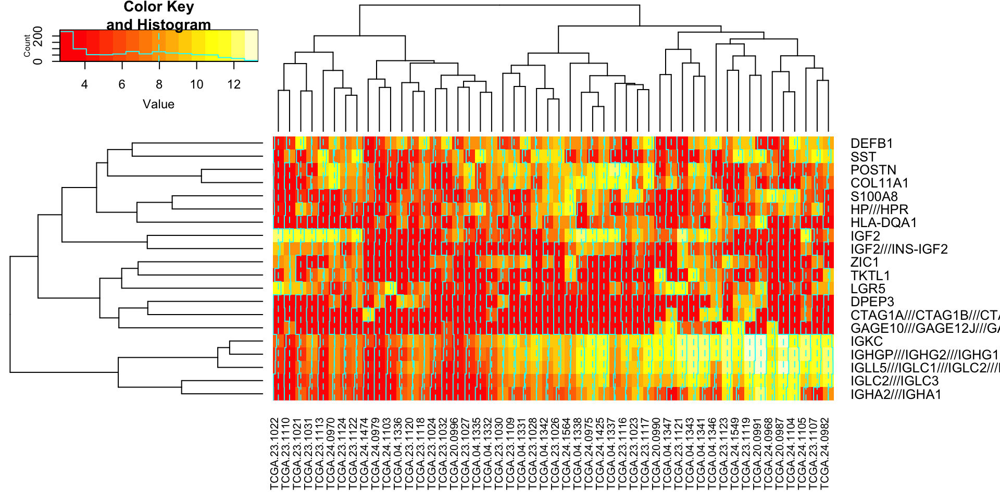
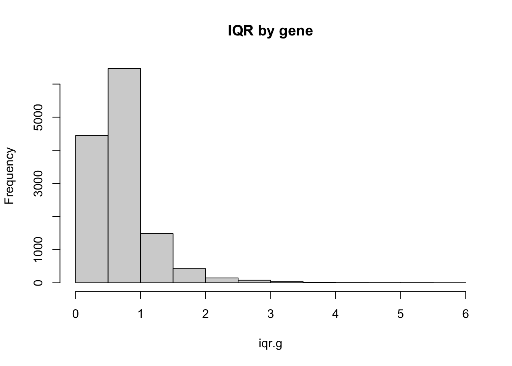
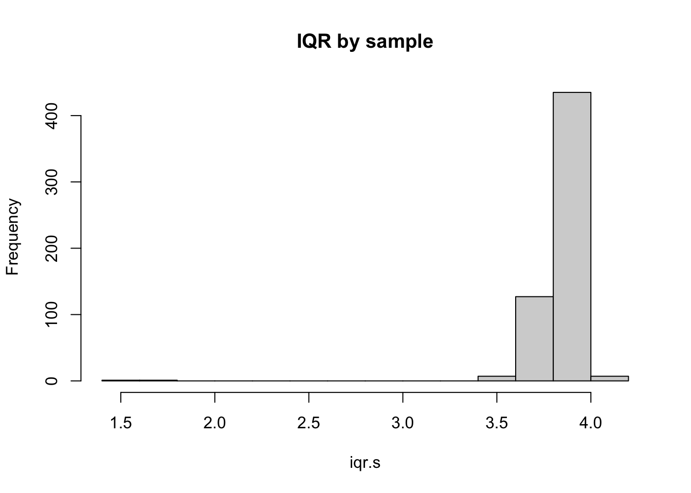
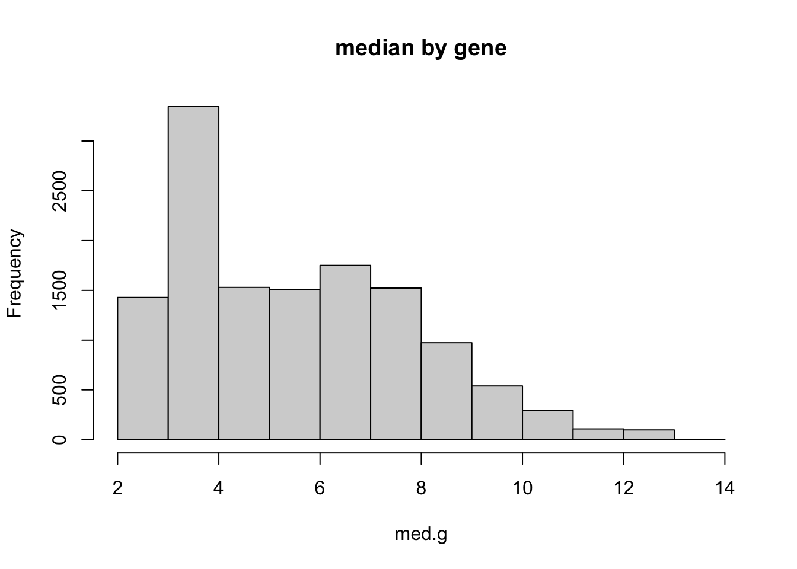
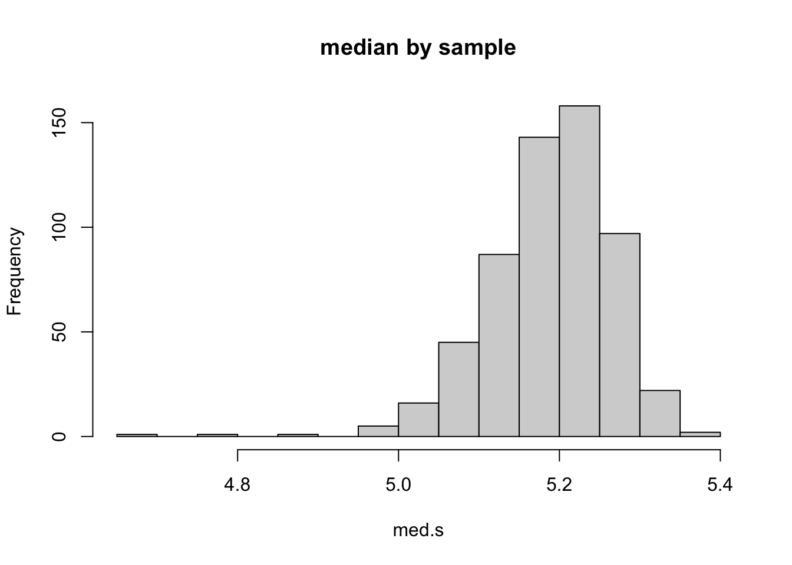
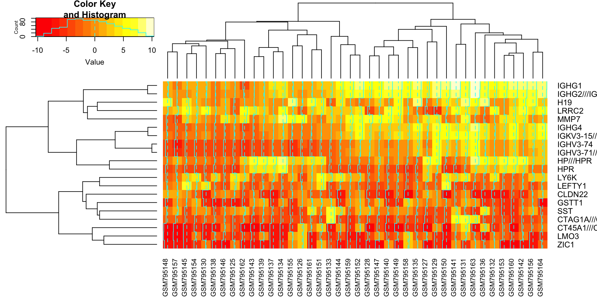
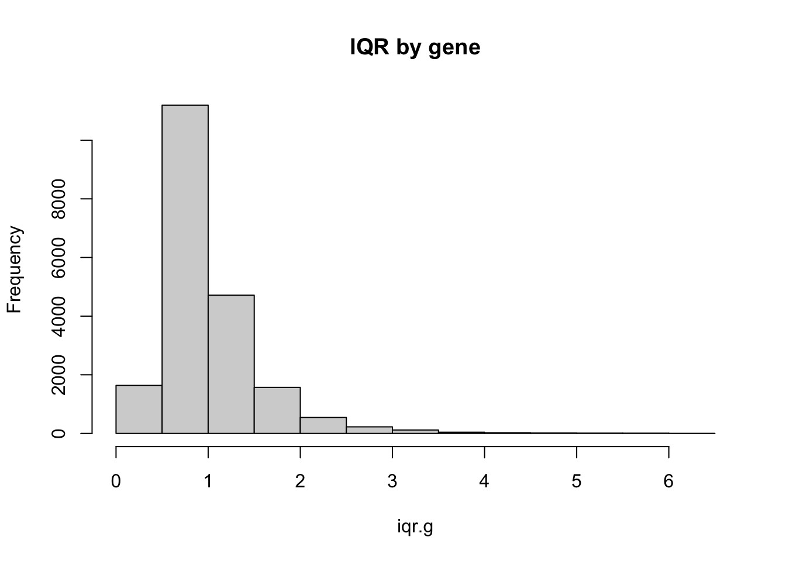
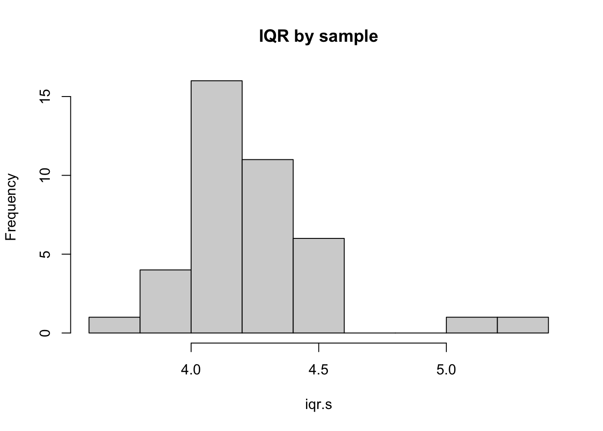
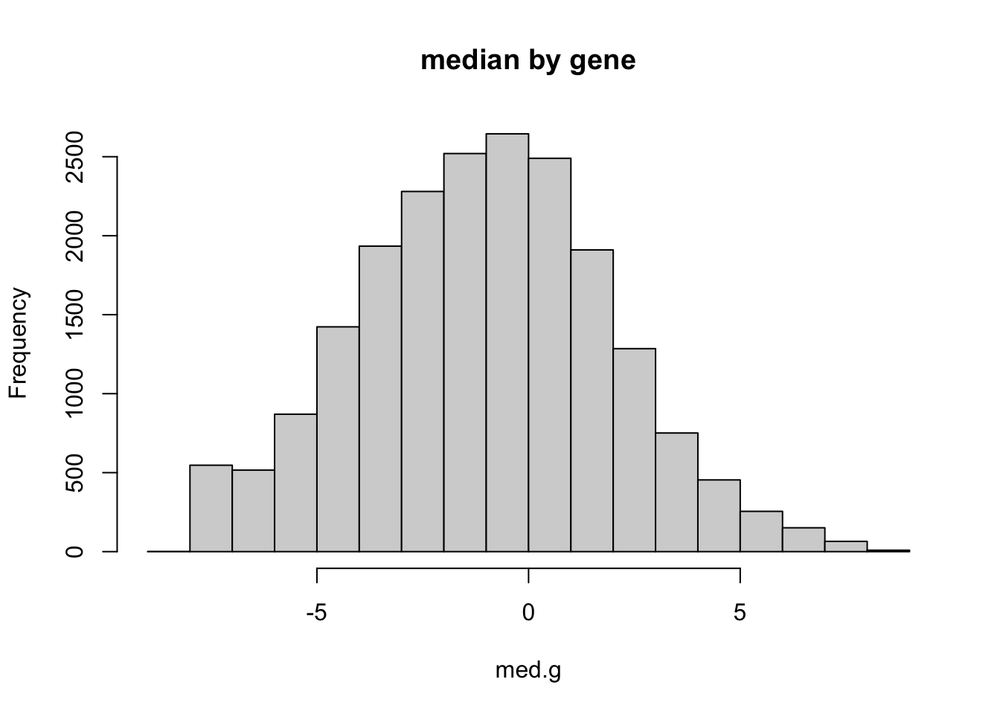
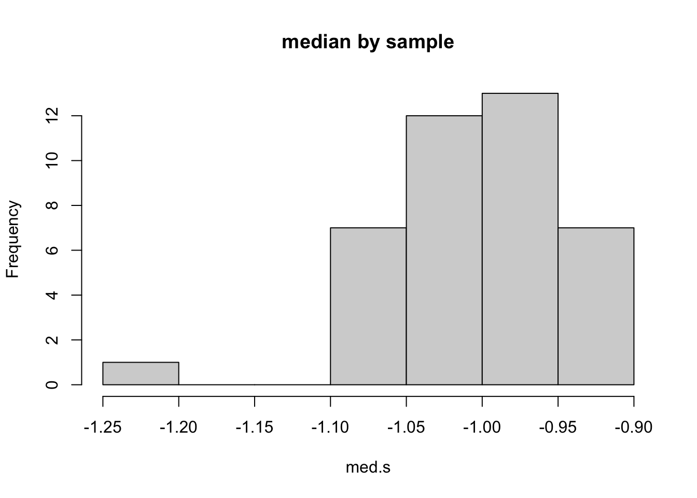

library(curatedOvarianData)
# data(package="curatedOvarianData")
# Above line would lists all datasets available within the package.
data(TCGA_eset)
data(GSE32063_eset)Lecture 3: Data
High Throughput Gene Expression Measurement
Steps of Gene Expression Measurement
Specimen Acquisition (get the samples, preserve them between the clinic and the lab, isolate the cells of interest etc)
Extraction / Preparation Protocols (extract RNA from the samples, often do additional preparation to get it ready for analysis (e.g add tags); often convert RNA into complementary DNA, or cDNA; break sequences into tiny fragments to be reassembled later)
Quantification (run the experiment)
Raw Data (typically images)
Your Data (a heavily preprocessed summary attempting to quantify expression at the aggregate level of a “gene”)
Affymetrix Microarrays (“Affy”)
We will work with expression data after it has been preprocessed and summarized at the gene label level. We will analyze a lot of data from the Affy platform. Preprocessing is a statistically challenging step. Some of the most important issues for Affymetrix data are discussed by @Owzar2008ccr
I also highly recommend Katerina Taskova’s Introduction to Microarray Analysis slide deck.
Reading Notes
RMA (slides 13-17) was used to preprocess the data we will use. A high-level understanding is useful. It produces summaries of expression at the level of the probe-set.
It is useful to know the difference between a probe (a single 25-nucleotide sequence), a probe-set (a group of probes predicted to appear on the coding sequence of a gene) and a gene (a region of DNA believed to often be the source of information for the production of a particular set of related proteins).
Multiple probe-sets can map the same gene (for a digression about this see [@stalteri2007bmcb]) To keep things simple and to cross-reference features across technologies we have averaged over these and will use data at the gene level [@ganzfried2013curatedovariandata].
Think about quantile normalization (QN) when looking at Slide 19. Does QN help? Does it remove the artifact in bad.cel completely? Does it remove the “fog” in NEG10-1?
We will cover differential expression later in the course (Slides 23-29). You are welcome to take a peek, but you can skip for now.
Each of the bullets on Slide 30 embeds its own sources of both noise and systematic biases.
Multiple probe sets for the same gene in Affy are sometimes designed to capture different isoforms (that is messenger RNAs made with different selection of exons). Because Affy needs to position probes near one end of the gene (long story), the extent to which they can capture different isoforms is not great compared to RNA-seq. But there could certainly be exceptions. Affy also used multiple probe sets to increase the number of probes dedicated to a certain genes, when the gene is important or there is uncertainty about mapping. In these cases averaging actually helps.
Rabbit hole: For those interested in a digression on imaging approaches (not covered at all in the class) including a menagerie of artifacts, see @arteaga-salas2007bb
RNA-seq
RNA-seq is the current alternative to hybridization microarrays. There are several RNA-seq datasets in the CuratedOvarianCanceer and CuratedBreastCancer package you will use in this class, but RNA-seq data exploration will be mostly optional. The main statistical lessons for this course can be learned equally well from Affy data. Of course I would not say this about a Bioinformatics class.
For those interested in understanding RNA-seq a bit more, I recommend the sections “Overview” and “Alignment and Quantification” from @VandenBerge2019arbds
@Xu2013bmcb report a head-to-head comparison of Affy and RNA-seq high throughput measurements. RNA-seq generates count data. It is interesting to look at Figure 1 and think about how to interpret the “stripes” in panel B.
Microarrays are rarely used for discovery these days. Many of the statistical challenges of biomarker discovery, however, have remained the same. The advantage of using microarrays for this course is there there are far more studies readily available, so certain parts of the course still work a lot better with microarray than RNA-seq.
Batch Effects
High-throughput biology data are often produced in batches for efficiency or practical restrictions. Differences across how these batches are handled (in any of the bullets in Slide 30 of Katerina Taskova’s Introduction to Microarray Analysis), can drive significant variation across batches, resulting in so-called batch effects.
CuratedOvarianData has been preprocessed to adjust for batches defined by the study of origin using Combat [@Johnson2006]. Other batch effects may be present.
@Leek2010nrg wrote a useful overview of batch effects.
The CuratedOvarianData package
Background
Comprehensive review of predictors and datasets for signature validation @Waldron2014
Preprocessing of Gene Expression Data in CuratedOvarianData
Detailed description of dataset @ganzfried2013curatedovariandata
Clinical Phenotypes in the CuratedOvarianData Package
It may seem disappointing that there are only two clinical annotations that all of these datasets have. When we originally created the dataset we recontacted all the groups that originally generated the data to try to fill as many of the gaps as possible. Unfortunately some of the clinical data may not have been collected, or may not be easy to share due to privacy concerns or investigators’ reluctance. Since we compiled this data, the field has moved towards larger coordinated efforts across multiple institutions, which have had better outcomes in terms of completeness and homogeneity of phenotypes. An example is PCAWG but heterogeneity and missingness of labels remain important issues in health data.
Loading the Package and Extracting Expression Data Matrices
We next load the CuratedOvarianData package and two datasets contained within. For now we will only consider the datasets TCGA_eset and GSE32063_eset. To check important characteristics of each of the studies, just enter the study ID (for example GSE32063) in the Gene Expression Omnibus query page
head(exprs(TCGA_eset)[1:6,1:6]) TCGA.20.0987 TCGA.23.1031 TCGA.24.0979 TCGA.23.1117 TCGA.23.1021
A1CF 2.923522 3.052169 2.846371 3.002209 3.062993
A2M 10.353008 11.635772 7.954542 9.971500 8.971334
A4GNT 3.321405 3.666463 3.258038 3.596212 3.388706
AAAS 4.608010 5.142133 5.025422 5.139928 5.256831
AACS 7.279213 7.048869 7.750161 6.206031 7.835422
AADAC 4.605331 5.775611 3.846412 4.468379 4.415817
TCGA.04.1337
A1CF 2.974734
A2M 9.042876
A4GNT 3.269979
AAAS 4.667723
AACS 6.763047
AADAC 4.159804head(exprs(GSE32063_eset)[1:6,1:6]) GSM795125 GSM795126 GSM795127 GSM795128 GSM795129 GSM795130
A1BG -6.3146850 -4.566943 -6.998341 -5.6383615 -6.780428 -5.1891665
A1BG-AS1 -3.6973042 -2.848625 -2.519599 -3.4870706 -3.043527 -2.6745200
A1CF -5.5054617 -3.861939 -4.552987 -4.5571017 -4.753347 -0.3129711
A2M 3.2657738 3.373391 5.217385 4.3027153 3.599464 3.2226200
A2ML1 -0.8923645 -0.733676 -1.512566 -0.7562313 -1.414893 -0.8385077
A3GALT2 -5.0457100 -4.183009 -4.553020 -4.2992754 -4.304550 -4.4622746Basic Visualizations
Clustered heatmap of the top 100 most variable genes in the first 50 samples in TCGA. The expression scale is the log of the pre-processed intensities.
sds = apply(exprs(TCGA_eset)[,1:50],1,sd)
library(gplots)
heatmap.2((exprs(TCGA_eset)[,1:50])[order(sds,decreasing=TRUE)[1:20],],
margins = c(6, 10))
Trees (dendrograms) on the top and sides represent the result of hierarchical clustering. The goal is to reorder rows and columns so that similar rows (column) are close to each other. In this case I am using them to facilitate visualization, but this is also a technique to identify patterns in the data or divide them into subgroups. This is a general overview @Garrett2005
The heatmap.2 function calls hclust to produce the dendrograms. The procedure is agglomerative —it starts by joining single rows, and proceeds iteratively from the bottom up. The lenth of the branches grows with the distance of the two entities (rows of clusters of rows) being joined. The default agglomeration method is the “complete linkage” method in which clusters are linked based on the similarity of the furthest members. Same for columns.
Blue lines. Inside the legend: histogram frequencies; inside the heat map, the distance of the line from the center of each color-cell is proportional to the size of the measurement (overkill? depends, people perceive location differently from color so it could help).
Distribution of location (median) and scale (Interquartile Range, or IQR), by gene and by sample.
iqr.g = apply(exprs(TCGA_eset),1,IQR) #
hist(iqr.g, main ="IQR by gene")
iqr.s = apply(exprs(TCGA_eset),2,IQR)
hist(iqr.s, main ="IQR by sample")
med.g = apply(exprs(TCGA_eset),1,median)
hist(med.g, main ="median by gene")
med.s = apply(exprs(TCGA_eset),2,median)
hist(med.s, main ="median by sample")
Quantile Normlization
If quantile normalization was applied by sample, why aren’t all medians and all IQR’s the same in the histograms by sample?
At least two reasons: 1) QN was applied at the proble level. Within each study data sere subsequently aggregated first by probeset and then by gene. 2) To (hopefully) increase comparabiity across studies, data where further process with a batch adjustment model that regresses out gene specific effects.
Clustered heatmap of the top 100 most variable genes in the Yoshirara study. The technology is Agilent. @yoshihara2012 describes the preprocessing approach. This set of 40 patients is “Dataset B” in [@yoshihara2012].
sds = apply(exprs(GSE32063_eset),1,sd)
library(gplots)
heatmap.2(exprs(GSE32063_eset)[order(sds,decreasing=TRUE)[1:20],])
Distribution of location (median) and scale (Interquartile Range, or IQR), by gene and by sample.
iqr.g = apply(exprs(GSE32063_eset),1,IQR)
hist(iqr.g, main ="IQR by gene")
iqr.s = apply(exprs(GSE32063_eset),2,IQR)
hist(iqr.s, main ="IQR by sample")
med.g = apply(exprs(GSE32063_eset),1,median)
hist(med.g, main ="median by gene")
med.s = apply(exprs(GSE32063_eset),2,median)
hist(med.s, main ="median by sample")